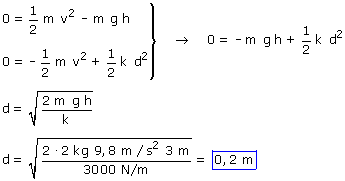

Total
Combinando los resultados obtenidos en la primera y segunda parte

Y ahora vamos a comprobar si el peso del bloque era despreciable en comparación con la fuerza media del muelle:

La fuerza media del muelle es más de 10 veces mayor que el peso, la aproximación era valida